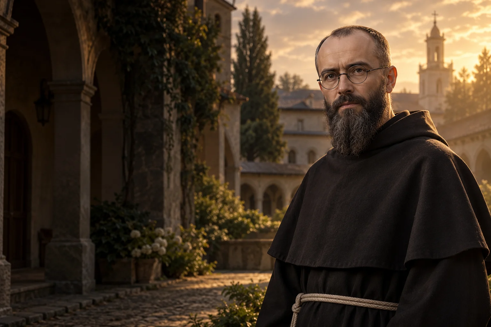

Odpowiedzialność za słowo
Zastanów się przed udostępnieniem wiadomości, czy wniesie do rozmowy prawdę i szacunek.

1894–1941
Obchód liturgiczny: 14 sierpnia
Franciszkanin i męczennik Auschwitz.
Franciszkanin, wydawca i misjonarz. W Auschwitz dobrowolnie zajął miejsce współwięźnia wybranego na śmierć.
Poznaj historię jego życia →Odwaga może wyrazić się w odpowiedzialności za drugiego człowieka w sytuacji granicznej.
Refleksja redakcji W Modlitwie.Rajmund Kolbe rodzi się w Zduńskiej Woli.
Przyjmuje święcenia w Rzymie.
Powstaje wspólnota pod Warszawą.
Rozpoczyna posługę misyjną w Japonii.
Oddaje życie w miejsce współwięźnia.
Jan Paweł II ogłasza go świętym.
 Współczesne wyobrażenie artystyczne.
Współczesne wyobrażenie artystyczne.Około 3 min czytania · 5 rozdziałów
Rajmund Kolbe urodził się w 1894 roku w Zduńskiej Woli, w rodzinie tkaczy. W młodości związał się z franciszkanami, a po wstąpieniu do zakonu przyjął imię Maksymilian. Został wysłany na studia do Rzymu. Tam przygotowywał się do kapłaństwa i rozwijał zainteresowania, które później połączył z działalnością wydawniczą.
Po wstąpieniu do franciszkanów Rajmund przyjął zakonne imię Maksymilian. Formacja zaprowadziła go do Rzymu, gdzie studiował i rozwijał zainteresowania filozoficzne oraz teologiczne. Jego dalsza droga łączyła życie wspólnoty zakonnej z działalnością publiczną.
Jego działalność miała wiele wymiarów: formację młodych zakonników, pracę wydawniczą, misję zagraniczną i pomoc osobom dotkniętym wojną. Żadna z tych części nie wyjaśnia samodzielnie całej jego biografii.
W Rzymie Maksymilian wraz z innymi braćmi założył Rycerstwo Niepokalanej, stowarzyszenie związane z duchowością maryjną. Święcenia kapłańskie przyjął w 1918 roku. Po powrocie do Polski rozwijał wydawnictwa religijne, aby docierać do czytelników poza kościołem i klasztorem. Praca ta wymagała zarówno formacji duchowej, jak i organizacji drukarni oraz współpracy wielu osób.
Rycerstwo Niepokalanej powstało w 1917 roku. Po powrocie do Polski Maksymilian rozwijał prasę maryjną i korzystał z możliwości technicznych drukarni. Dla współbraci oznaczało to nie tylko przygotowywanie tekstów, ale również codzienny wysiłek organizacyjny i pracę fizyczną.
W 1927 roku pod Warszawą powstał Niepokalanów: wspólnota franciszkańska połączona z ośrodkiem wydawniczym. Maksymilian wyjechał również do Japonii. W okolicach Nagasaki powstała kolejna wspólnota, w której prowadzono działalność misyjną i wydawniczą. Po kilku latach wrócił do Polski. W jego życiu ważne miejsce zajmowała modlitwa, ale też praktyczne wykorzystanie dostępnych środków komunikacji.
Japońska wspólnota powstała w rejonie Nagasaki. Misja wymagała odnalezienia się w innym języku i kulturze oraz współpracy miejscowych ludzi i zakonników. Choć chorował na gruźlicę, przez lata kontynuował pracę na rzecz wspólnoty i jej wydawnictw.
Po niemieckiej napaści na Polskę Niepokalanów stał się również miejscem pomocy uchodźcom. Maksymilian został aresztowany przez okupantów, a w 1941 roku trafił do Auschwitz. Gdy po ucieczce więźnia wybrano grupę ludzi na śmierć głodową, zgłosił się w miejsce Franciszka Gajowniczka. Zamknięto go z innymi skazanymi w bunkrze głodowym.
Wybór więźniów był zbiorową karą zastosowaną przez obozowe władze po ucieczce jednego z osadzonych. Kolbe zgłosił się, gdy wybrano Gajowniczka. Po około dwóch tygodniach w bunkrze został zabity zastrzykiem. Obozowa rzeczywistość pozostaje kontekstem jego decyzji.
Maksymilian Kolbe został zabity zastrzykiem trucizny 14 sierpnia 1941 roku w obozie. Franciszek Gajowniczek przeżył wojnę. Paweł VI beatyfikował franciszkanina w 1971 roku, a Jan Paweł II kanonizował go w 1982 roku jako męczennika. Jego wspomnienie przypada 14 sierpnia. Pamięć o nim kieruje uwagę ku ofiarom obozu oraz osobistej odpowiedzialności w świecie przemocy.
Gajowniczek był obecny podczas uroczystości beatyfikacji i kanonizacji franciszkanina. W Polsce Maksymilian jest także patronem honorowych dawców krwi. Jego los przypomina o ofiarach niemieckiego nazistowskiego obozu i znaczeniu pomocy konkretnemu człowiekowi.
Kościół wspomina go w rocznicę śmierci, 14 sierpnia.
Zastanów się przed udostępnieniem wiadomości, czy wniesie do rozmowy prawdę i szacunek.

Zapytaj kogoś z otoczenia, czy potrzebuje dziś praktycznego wsparcia.

Poznaj świadectwo osoby więzionej w Auschwitz, zachowując szacunek dla jej historii.
Ojcze nasz, któryś jest w niebie, święć się imię Twoje; przyjdź królestwo Twoje; bądź wola Twoja jako w niebie, tak i na ziemi. Chleba naszego powszedniego daj nam dzisiaj; i odpuść nam nasze winy, jako i my odpuszczamy naszym winowajcom; i nie wódź nas na pokuszenie, ale nas zbaw ode złego. Amen.
Tradycyjny tekst modlitwy; utrwalony polski wariant.Ojcze nasz →